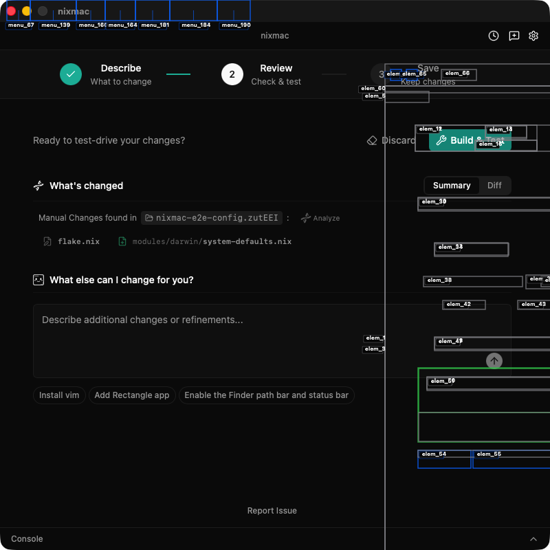
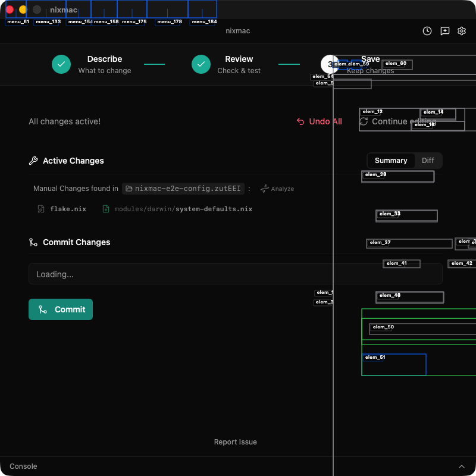
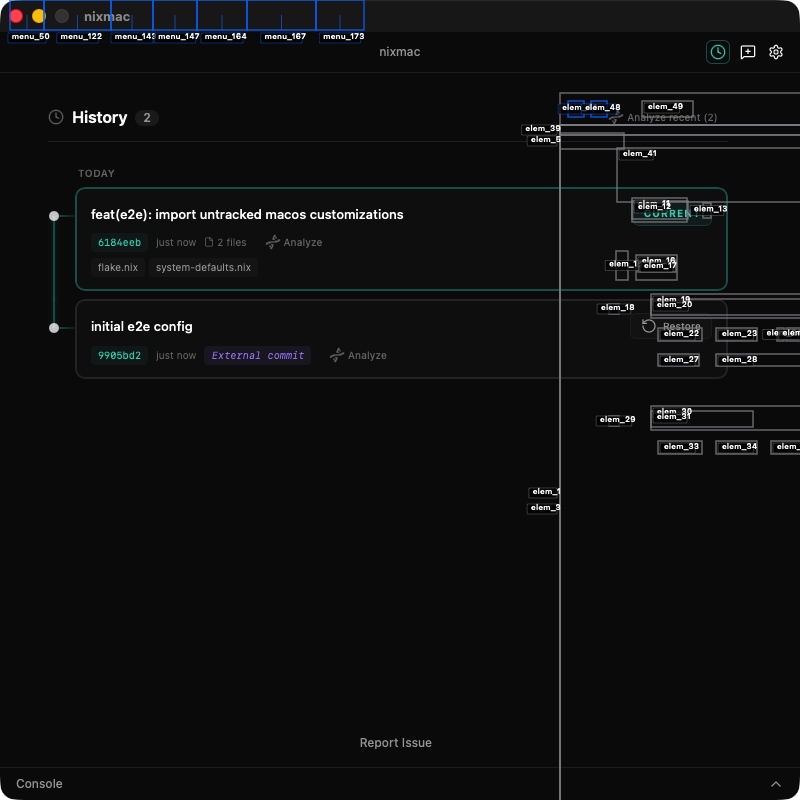
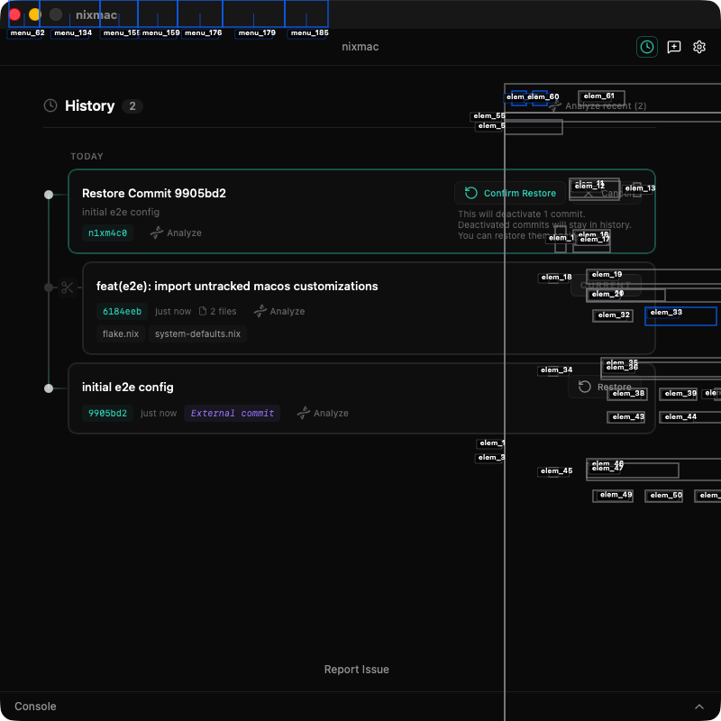
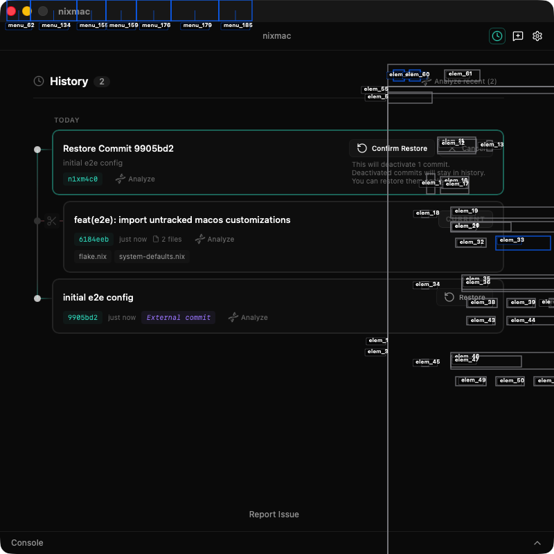

nixmac Peekaboo Local E2E Evidence
Peekaboo drove the actual nixmac macOS app through Scott's shell driver and preserved inspectable screenshots, structured report data, runner logs, and artifact quality gates.
Single-scenario boundary This report is evidence for one focused Peekaboo scenario, not a full parity claim; use the Peekaboo suite report for Computer Use breadth parity.
Pull Request Focus
PR: 90 - Add Peekaboo local Product Proof lane
Refs: fkb/e2e-required-gate-policy ← fkb/scott-peekaboo-local-e2e
Mapped PR Surfaces
| Changed File | Surface | Scenario Focus | Coverage Note |
|---|---|---|---|
apps/native/src-tauri/src/main.rs |
Debug-only E2E harness hooks | explicit waiver / unmapped | Changed file is tracked for PR visibility, but this surface does not claim user-facing scenario coverage for NIXMAC_E2E_* debug harness branches. |
apps/native/src-tauri/src/rebuild/darwin.rs |
Debug-only E2E harness hooks | explicit waiver / unmapped | Changed file is tracked for PR visibility, but this surface does not claim user-facing scenario coverage for NIXMAC_E2E_* debug harness branches. |
apps/native/src-tauri/src/storage/store.rs |
Debug-only E2E harness hooks | explicit waiver / unmapped | Changed file is tracked for PR visibility, but this surface does not claim user-facing scenario coverage for NIXMAC_E2E_* debug harness branches. |
apps/native/src-tauri/src/summarize/build_prompt.rs |
Prompt submission, provider progress, Review, Summary, and Diff | Home suggestion cards are visible/clickable, A typed real intent can be submitted, Real provider workflow reaches Review, Summary describes the typed intent, Diff shows an acceptable config change | Mapped |
apps/native/src-tauri/src/summarize/build_prompt.rs |
Step 3 Save / Commit | Step 3 Save / Keep changes persists a change | Mapped |
Scenario Focus
- Scenario results include inspectable visual/text evidence
- Generated HTML report is inspected or integrity-verified
- Home suggestion cards are visible/clickable
- A typed real intent can be submitted
- Real provider workflow reaches Review
- Summary describes the typed intent
- Diff shows an acceptable config change
- Step 3 Save / Keep changes persists a change
Suggested Coverage Updates
- No unmapped user-visible changed files detected.
Changed files (32)
.github/workflows/peekaboo-e2e.ymlapps/native/src-tauri/src/main.rsapps/native/src-tauri/src/rebuild/darwin.rsapps/native/src-tauri/src/storage/store.rsapps/native/src-tauri/src/summarize/build_prompt.rsapps/native/src/components/kibo-ui/code-block/index.tsxtests/e2e/README.mdtests/e2e/adapters/nixmac.shtests/e2e/lib/app.shtests/e2e/lib/core.shtests/e2e/lib/nixmac_managed_badge_proof.shtests/e2e/lib/nixmac_product_proof.shtests/e2e/lib/peekaboo.shtests/e2e/lib/peekaboo.test.shtests/e2e/lib/recording.shtests/e2e/lib/report.shtests/e2e/lib/runner.shtests/e2e/run.shtests/e2e/scenarios/macos_console_smoke.shtests/e2e/scenarios/macos_core_product_proof.shtests/e2e/scenarios/macos_customization_save_rollback_smoke.shtests/e2e/scenarios/macos_descriptor_prompt_smoke.shtests/e2e/scenarios/macos_homebrew_save_rollback_smoke.shtests/e2e/scenarios/macos_provider_discard_smoke.shtests/e2e/scenarios/macos_provider_evolve_full_smoke.shtests/e2e/scenarios/macos_support_dialogs_smoke.shtools/computer-use-e2e/README.mdtools/computer-use-e2e/coverage-manifest.jsontools/computer-use-e2e/peekaboo-runner.mjstools/computer-use-e2e/peekaboo-workflow-contract-self-test.mjstools/computer-use-e2e/run-local.mjstools/computer-use-e2e/scenario-catalog.mjs
Unmapped user-visible files (0)
- No unmapped user-visible files detected.
Run Metadata
65a034f04041ba67b055add44f626e0a27b7c7fbbash tests/e2e/run.sh macos_customization_save_rollback_smokeExecuted Proof
These are the checks this run actually exercised. Failures and inconclusive rows stay visible here; skipped scope is collapsed later.
Failures / Inconclusive
| Scenario | Status | Notes |
|---|---|---|
Peekaboo customization save/rollback smokepeekabooCustomizationSaveRollbackSmoke |
fail | Legacy JSON result file was not produced. Parsed structured report e2e-report/macos_customization_save_rollback_smoke/e2e-report.json with status failed. Scanned 8 text artifact(s) for unmasked provider secrets: passed. Checked 16 screenshot artifact(s) for visual signal: passed. Wrote additive Peekaboo coverage map for 4 phase key(s). |
| Proof | Status | Grade | CU keys | Evidence |
|---|---|---|---|---|
Peekaboo customization save/rollback smokepeekabooCustomizationSaveRollbackSmoke |
fail | scenario | none | Legacy JSON result file was not produced. Parsed structured report e2e-report/macos_customization_save_rollback_smoke/e2e-report.json with status failed. Scanned 8 text artifact(s) for unmasked provider secrets: passed. Checked 16 screenshot artifact(s) for visual signal: passed. Wrote additive Peekaboo coverage map for 4 phase key(s). |
Peekaboo provider fixture setuppeekabooProviderFixture |
pass | fixture | none | Prepared customization managed-badge fixture, deterministic HTTP provider, completion logging, and mock rebuild flag Corresponds to Computer Use key(s): none; Peekaboo evidence grade: fixture. |
Peekaboo provider app shellpeekabooProviderLaunch |
pass | action-confirmed | launch | App launched for Untracked customizations proof Corresponds to Computer Use key(s): launch; Peekaboo evidence grade: action-confirmed. |
Peekaboo provider Build & Test boundarypeekabooProviderBuildBoundary |
pass | action-confirmed | buildBoundary | Build & Test advanced to Save step for Untracked customizations Corresponds to Computer Use key(s): buildBoundary; Peekaboo evidence grade: action-confirmed. |
Peekaboo provider Save flowpeekabooProviderSaveFlow |
pass | remote-state | saveFlow | Untracked customizations Save step committed changes and returned to Describe Corresponds to Computer Use key(s): saveFlow; Peekaboo evidence grade: remote-state. |
Computer Use Parity Map
This map is additive and explicit: it lists which Computer Use keys are covered by Peekaboo evidence in this run, and keeps remaining breadth visible.
| Computer Use Key | Status | Peekaboo Evidence | Grade | Notes |
|---|---|---|---|---|
none |
pass | peekabooProviderFixturePeekaboo provider fixture |
fixture | Peekaboo-only fixture or audit evidence; no direct Computer Use key. |
launch |
pass | peekabooProviderLaunchPeekaboo provider launch |
action-confirmed | Covered by passed Peekaboo phase(s): peekabooProviderLaunch. |
buildBoundary |
pass | peekabooProviderBuildBoundaryPeekaboo Build & Test boundary |
action-confirmed | Covered by passed Peekaboo phase(s): peekabooProviderBuildBoundary. |
saveFlow |
pass | peekabooProviderSaveFlowPeekaboo Save flow |
remote-state | Covered by passed Peekaboo phase(s): peekabooProviderSaveFlow. |
Transitive Computer Use coverage (3)
| CU Scenario | Status | Grade | Peekaboo Phase | Evidence |
|---|---|---|---|---|
App launches and first screen is usablelaunch |
pass | action-confirmed | peekabooProviderLaunch |
Covered transitively by peekabooProviderLaunch; Peekaboo evidence grade: action-confirmed. |
Build & Test confirmation boundary appears and is cancelledbuildBoundary |
pass | action-confirmed | peekabooProviderBuildBoundary |
Covered transitively by peekabooProviderBuildBoundary; Peekaboo evidence grade: action-confirmed. |
Step 3 Save / Keep changes persists a changesaveFlow |
pass | remote-state | peekabooProviderSaveFlow |
Covered transitively by peekabooProviderSaveFlow; Peekaboo evidence grade: remote-state. |
PR #75 Baseline Coverage
Required parity keys are separated from PR/meta checks and explicit waivers so this report does not inflate or hide the remaining gap.
| Required Key | Peekaboo Status | Computer Use Scenario | Notes |
|---|---|---|---|
launch |
covered | App launches and first screen is usable | Covered by passed Peekaboo evidence in this report. |
updateBanner |
gap | Update banner does not block the main workflow | Remaining required breadth gap for Peekaboo parity. |
settingsGeneral |
gap | Settings General tab visibly renders | Remaining required breadth gap for Peekaboo parity. |
settingsAIModels |
gap | Settings AI Models tab visibly renders | Remaining required breadth gap for Peekaboo parity. |
settingsAPIKeys |
gap | Settings API Keys tab visibly renders | Remaining required breadth gap for Peekaboo parity. |
settingsPreferences |
gap | Settings Preferences tab visibly renders | Remaining required breadth gap for Peekaboo parity. |
history |
gap | My History opens and renders | Remaining required breadth gap for Peekaboo parity. |
console |
gap | Console opens and closes | Remaining required breadth gap for Peekaboo parity. |
feedback |
gap | Feedback / report dialogs open and cancel without submission | Remaining required breadth gap for Peekaboo parity. |
reportIssue |
gap | Report Issue opens and can be cancelled | Remaining required breadth gap for Peekaboo parity. |
suggestionCards |
gap | Home suggestion cards are visible/clickable | Remaining required breadth gap for Peekaboo parity. |
customizationSaveRollback |
gap | Untracked macOS customizations can be saved and rolled back | Remaining required breadth gap for Peekaboo parity. |
homebrewSaveRollback |
gap | Untracked Homebrew items can be saved and rolled back | Remaining required breadth gap for Peekaboo parity. |
typedIntent |
gap | A typed real intent can be submitted | Remaining required breadth gap for Peekaboo parity. |
review |
gap | Real provider workflow reaches Review | Remaining required breadth gap for Peekaboo parity. |
summary |
gap | Summary describes the typed intent | Remaining required breadth gap for Peekaboo parity. |
diff |
gap | Diff shows an acceptable config change | Remaining required breadth gap for Peekaboo parity. |
buildBoundary |
covered | Build & Test confirmation boundary appears and is cancelled | Covered by passed Peekaboo evidence in this report. |
saveFlow |
covered | Step 3 Save / Keep changes persists a change | Covered by passed Peekaboo evidence in this report. |
rollbackCleanup |
gap | Rollback cleanup returns disposable config to clean state | Remaining required breadth gap for Peekaboo parity. |
discard |
gap | Discard confirmation and return-to-start | Remaining required breadth gap for Peekaboo parity. |
visualCoverage |
gap | Core UX/UI surfaces are captured and inspectable | Remaining required breadth gap for Peekaboo parity. |
visualProofQuality |
gap | Scenario results include inspectable visual/text evidence | Remaining required breadth gap for Peekaboo parity. |
reportInspection |
gap | Generated HTML report is inspected or integrity-verified | Remaining required breadth gap for Peekaboo parity. |
Meta checks and explicit waivers
| Key | Type | Notes |
|---|---|---|
mainCoverageFreshness | PR/meta | Main branch user-visible coverage stays mapped |
prSpecificCoverage | PR/meta | PR-specific user-visible behavior is covered when applicable |
storybookPreview | PR/meta | Changed UI has a direct Storybook preview when applicable |
customizationSaveRollback | known limit | Untracked customizations save + rollback Visibility alone is not parity. Peekaboo should only claim this after a deterministic chip add, Save, and rollback scenario proves the disposable repo returns clean. |
homebrewSaveRollback | known limit | Untracked Homebrew save + rollback Visibility alone is not parity. Peekaboo should only claim this after a deterministic Homebrew chip add, Save, and rollback scenario proves the disposable repo returns clean. |
onboardingPermissions | known limit | Clean-profile onboarding permissions PR #75 tracks this as a known limit; Peekaboo parity should add a clean-profile scenario before claiming full main coverage. |
sudoLocalActivation | known limit | Production sudo_local activation path PR #75 uses a CI fixture waiver. Peekaboo should keep this as a separate release/manual proof unless unattended activation is made deterministic. |
previewIndicator | known limit | Preview indicator commit/revert UI Needs deterministic preview-state setup or a real workflow that activates the indicator. |
Visual Proof
Screenshot cards use raw frames with reviewer-facing highlights. These highlights are visual signposts for inspecting the captured proof; scenario status comes from the recorded run verdict, and semantic pass/fail proof remains in the scenario tables and artifacts.
Peekaboo AX overlay
Auto-generated accessibility-tree boxes from Peekaboo, kept for debugging but not treated as the curated pass/fail callout layer.


Peekaboo AX overlay
Auto-generated accessibility-tree boxes from Peekaboo, kept for debugging but not treated as the curated pass/fail callout layer.

Peekaboo AX overlay
Auto-generated accessibility-tree boxes from Peekaboo, kept for debugging but not treated as the curated pass/fail callout layer.

Peekaboo AX overlay
Auto-generated accessibility-tree boxes from Peekaboo, kept for debugging but not treated as the curated pass/fail callout layer.


Peekaboo AX overlay
Auto-generated accessibility-tree boxes from Peekaboo, kept for debugging but not treated as the curated pass/fail callout layer.

Peekaboo AX overlay
Auto-generated accessibility-tree boxes from Peekaboo, kept for debugging but not treated as the curated pass/fail callout layer.

Peekaboo AX overlay
Auto-generated accessibility-tree boxes from Peekaboo, kept for debugging but not treated as the curated pass/fail callout layer.

Peekaboo AX overlay
Auto-generated accessibility-tree boxes from Peekaboo, kept for debugging but not treated as the curated pass/fail callout layer.

Artifacts
| Artifact | Path |
|---|---|
| Preflight | peekaboo-preflight.txt |
| Log | peekaboo-e2e.log |
| stdout | peekaboo-e2e.stdout.txt |
| stderr | peekaboo-e2e.stderr.txt |
| Structured report | e2e-report/macos_customization_save_rollback_smoke/e2e-report.json |
| Video | video/peekaboo-e2e.mp4 |
| peekaboo-coverage-map.json | peekaboo-coverage-map.json |
| secret-scan.json | secret-scan.json |
| screenshot-signal.json | screenshot-signal.json |
Human QA Narrative
- 2026-05-06T04:10:30.346Z - Ran Peekaboo scenario macos_customization_save_rollback_smoke. Results: e2e-report/macos_customization_save_rollback_smoke/e2e-report.json.
Claims vs Evidence
Claims vs evidence (5)
| Claim | Status | Evidence |
|---|---|---|
| Peekaboo macos_customization_save_rollback_smoke: Prepared customization managed-badge fixture, deterministic HTTP provider, completion logging, and mock rebuild flag | pass | Recorded by tests/e2e/run.sh; see e2e-report/macos_customization_save_rollback_smoke/e2e-report.json. |
| Peekaboo macos_customization_save_rollback_smoke: App launched for Untracked customizations proof | pass | Recorded by tests/e2e/run.sh; see e2e-report/macos_customization_save_rollback_smoke/e2e-report.json. |
| Peekaboo macos_customization_save_rollback_smoke: Build & Test advanced to Save step for Untracked customizations | pass | Recorded by tests/e2e/run.sh; see e2e-report/macos_customization_save_rollback_smoke/e2e-report.json. |
| Peekaboo macos_customization_save_rollback_smoke: Untracked customizations Save step committed changes and returned to Describe | pass | Recorded by tests/e2e/run.sh; see e2e-report/macos_customization_save_rollback_smoke/e2e-report.json. |
| Peekaboo macos_customization_save_rollback_smoke: Untracked customizations History restore did not return disposable config repo to baseline | fail | Recorded by tests/e2e/run.sh; see e2e-report/macos_customization_save_rollback_smoke/e2e-report.json. |
Confirmation Boundaries
None recorded.
Cleanup / Restore Status
Restored original app support directory from off-repo backup and removed that backup: /Users/admin/Library/Caches/com.darkmatter.nixmac-e2e/peekaboo-e2e-backups/2026-05-06_04-08-29-397Z/app-support-backup.
Out of Scope for This Scenario
38 not-required row(s), collapsed to keep executed proof readable
| Scenario | Status | Notes |
|---|---|---|
Settings safe tabs render: General, AI Models, Preferencessettings |
not_required | Not required for Peekaboo macos_customization_save_rollback_smoke run. |
Home suggestion card is clickablesuggestion |
not_required | Not required for Peekaboo macos_customization_save_rollback_smoke run. |
Typed intent reaches reviewdescriptor |
not_required | Not required for Peekaboo macos_customization_save_rollback_smoke run. |
Build check completes or fails visiblybuildCheck |
not_required | Not required for Peekaboo macos_customization_save_rollback_smoke run. |
Main branch user-visible coverage stays mappedmainCoverageFreshness |
not_required | Not required for Peekaboo macos_customization_save_rollback_smoke run. |
PR-specific user-visible behavior is covered when applicableprSpecificCoverage |
not_required | Not required for Peekaboo macos_customization_save_rollback_smoke run. |
Changed UI has a direct Storybook preview when applicablestorybookPreview |
not_required | Not required for Peekaboo macos_customization_save_rollback_smoke run. |
Peekaboo descriptor prompt smokepeekabooDescriptorPromptSmoke |
not_required | Not required for Peekaboo macos_customization_save_rollback_smoke run. |
Peekaboo core Product Proof wrapperpeekabooCoreProductProof |
not_required | Not required for Peekaboo macos_customization_save_rollback_smoke run. |
Peekaboo support dialogs smokepeekabooSupportDialogsSmoke |
not_required | Not required for Peekaboo macos_customization_save_rollback_smoke run. |
Peekaboo Console smokepeekabooConsoleSmoke |
not_required | Not required for Peekaboo macos_customization_save_rollback_smoke run. |
Peekaboo Homebrew save/rollback smokepeekabooHomebrewSaveRollbackSmoke |
not_required | Not required for Peekaboo macos_customization_save_rollback_smoke run. |
Peekaboo core fixture setuppeekabooCoreFixture |
not_required | Not required for Peekaboo macos_customization_save_rollback_smoke run. |
Peekaboo core app shellpeekabooCoreLaunch |
not_required | Not required for Peekaboo macos_customization_save_rollback_smoke run. |
Peekaboo update banner non-blocking statepeekabooCoreUpdateBanner |
not_required | Not required for Peekaboo macos_customization_save_rollback_smoke run. |
Peekaboo Settings GeneralpeekabooCoreSettingsGeneral |
not_required | Not required for Peekaboo macos_customization_save_rollback_smoke run. |
Peekaboo Settings AI ModelspeekabooCoreSettingsAIModels |
not_required | Not required for Peekaboo macos_customization_save_rollback_smoke run. |
Peekaboo Settings API Keys redaction proofpeekabooCoreSettingsAPIKeys |
not_required | Not required for Peekaboo macos_customization_save_rollback_smoke run. |
Peekaboo Settings PreferencespeekabooCoreSettingsPreferences |
not_required | Not required for Peekaboo macos_customization_save_rollback_smoke run. |
Peekaboo History surfacepeekabooCoreHistory |
not_required | Not required for Peekaboo macos_customization_save_rollback_smoke run. |
Peekaboo Console text surfacepeekabooCoreConsole |
not_required | Not required for Peekaboo macos_customization_save_rollback_smoke run. |
Peekaboo Feedback dialogpeekabooCoreFeedback |
not_required | Not required for Peekaboo macos_customization_save_rollback_smoke run. |
Peekaboo Report Issue classificationpeekabooCoreReportIssue |
not_required | Not required for Peekaboo macos_customization_save_rollback_smoke run. |
Peekaboo suggestion card prompt fillpeekabooCoreSuggestionCards |
not_required | Not required for Peekaboo macos_customization_save_rollback_smoke run. |
Peekaboo typed intentpeekabooCoreTypedIntent |
not_required | Not required for Peekaboo macos_customization_save_rollback_smoke run. |
Peekaboo local provider-validation boundarypeekabooCoreProviderValidation |
not_required | Not required for Peekaboo macos_customization_save_rollback_smoke run. |
Peekaboo core visual/text proof qualitypeekabooCoreVisualProofQuality |
not_required | Not required for Peekaboo macos_customization_save_rollback_smoke run. |
Peekaboo Homebrew save + rollbackpeekabooHomebrewSaveRollback |
not_required | Not required for Peekaboo macos_customization_save_rollback_smoke run. |
Peekaboo customization save + rollbackpeekabooCustomizationSaveRollback |
not_required | Not required for Peekaboo macos_customization_save_rollback_smoke run. |
Peekaboo provider-backed evolve smokepeekabooProviderEvolveFullSmoke |
not_required | Not required for Peekaboo macos_customization_save_rollback_smoke run. |
Peekaboo provider discard smokepeekabooProviderDiscardSmoke |
not_required | Not required for Peekaboo macos_customization_save_rollback_smoke run. |
Peekaboo provider typed intentpeekabooProviderTypedIntent |
not_required | Not required for Peekaboo macos_customization_save_rollback_smoke run. |
Peekaboo provider Review proofpeekabooProviderReview |
not_required | Not required for Peekaboo macos_customization_save_rollback_smoke run. |
Peekaboo provider rollback cleanuppeekabooProviderRollbackCleanup |
not_required | Not required for Peekaboo macos_customization_save_rollback_smoke run. |
Peekaboo provider request auditpeekabooProviderAudit |
not_required | Not required for Peekaboo macos_customization_save_rollback_smoke run. |
Peekaboo provider Discard proofpeekabooProviderDiscard |
not_required | Not required for Peekaboo macos_customization_save_rollback_smoke run. |
Peekaboo report inspectionpeekabooReportInspection |
not_required | Not required for Peekaboo macos_customization_save_rollback_smoke run. |
Peekaboo Nix install flowpeekabooNixInstall |
not_required | Not required for Peekaboo macos_customization_save_rollback_smoke run. |